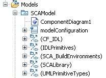

Default SCA Model Elements
When you create a new model, four folders are added to the Models folder. These read only folders are:
- (CF_IDL): contains the core framework IDL interfaces and port types
- (IDLPrimitives): contains the CORBA IDL
- (SCA_BuildEnvironments): contains the default build configuration files required for Zeligsoft code generation
- (SCALibrary): contains PortTypes for CF interfaces and some common SCA DataTypes
- (UMLPrimitiveTypes): contains the UML primitive types

These elements can be dragged from the Project Explorer onto the diagram you are working in and can be used to further define your
model elements.
The default build configuration files are used when you configure build environments for the Spectra CX Code Generator.